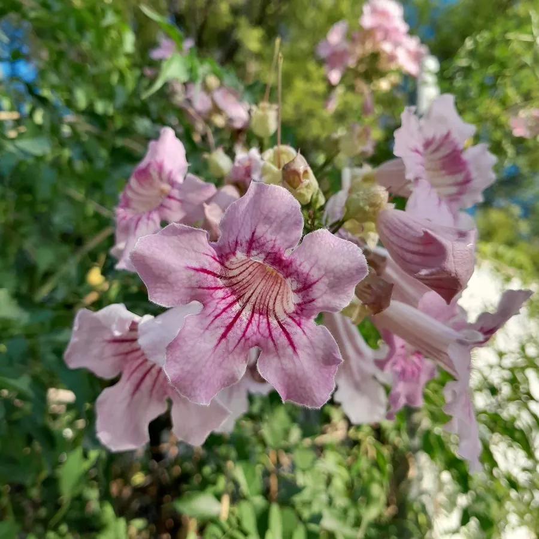

灌木与花木 · 植物界
粉花凌霄 Podranea ricasoliana

紫葳科粉花凌霄属常绿藤状灌木，花冠粉红色、喉部带紫纹，花大而繁，是南方篱垣与棚架上的优良观花藤本。
- 分类
- 门被子植物门纲木兰纲目唇形目科紫葳科属粉花凌霄属
- 栖息环境
- 南非亚热带林缘，喜温暖湿润、阳光充足，不耐寒
- 地理分布
- 原产南非；中国华南、西南及世界热带、亚热带地区栽培
- 保护级别
- IUCN 暂无评估；栽培广泛，野生种群未受明显威胁
物种志
粉花凌霄为常绿藤状灌木，蔓长可达 5–8 米，茎干柔韧，靠卷须状的气生根攀援。叶对生，奇数羽状复叶，小叶 7–11 枚，卵形至披针形，边缘具锯齿。圆锥花序顶生，花冠漏斗状，粉红色，长 6–8 厘米，喉部具紫红色条纹，花冠檐部 5 裂，花期繁密；蒴果长条形，成熟时开裂，种子具翅。
本种原产南非，喜温暖湿润、阳光充足的环境，在中国华南、西南常作棚架、篱垣与坡面绿化。它花大色柔、开花繁盛，一朵花可开数日，整株花期可达半年，是南方藤本花木中的佼佼者。粉花凌霄不耐寒，长江以北需温室盆栽；生长迅速，需定期修剪控制冠幅，并设坚固支架承受花量。其花蜜丰富，能吸引蜜蜂与蝴蝶。
形态与习性
- 蔓长可达 5–8 米，攀援生长
- 花期5–10 月，花冠粉红色
- 果期秋季，蒴果长条形
- 光照喜光，每天需充足直射光
- 水分喜湿润，生长期需充足浇水
- 土壤肥沃、排水良好的沙质壤土
- 主要用途棚架、篱垣与坡面绿化
趣味知识
- 粉花凌霄的花冠喉部有紫红色条纹，是引导传粉昆虫的“蜜导”。
- 它原产南非，20 世纪起被广泛引种到地中海与热带地区作棚架植物。
- 粉花凌霄的花期很长，在温暖地区可从春末一直开到初冬。
- 它的茎需要支撑才能攀援，花量大时支架必须牢固，以免被风吹倒。